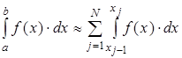
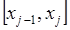

Задача численного интегрирования
Численное интегрирование — вычисление значения определённого интеграла (как правило, приближённое).
Задача численного интегрирования состоит в замене исходной подынтегральной функции некоторой аппроксимирующей функцией (обычно полиномом).
Численное интегрирование применяется, когда:
- сама подынтегральная функция не задана аналитически, а например, представлена в виде таблицы значений;
- аналитическое представление подынтегральной функции известно, но её первообразная не выражается через аналитические функции.
Рис. 1 Геометрический смысл интеграла
Способы численного вычисления определенных интегралов основаны на замене интеграла конечной суммой:
где – числовые коэффициенты, выбор которых зависит от выбранного метода численного интегрирования, – узлы интегрирования
Разделим отрезок [a,b] на N равных частей, то есть на N элементарных отрезков. Длина каждого элементарного отрезка:
Тогда значение интеграла можно представить в виде:

Из этого выражения видно, что для численного интегрирования на отрезке [a,b], достаточно построить квадратурную формулу на каждом частичном отрезке 